install.packages("languageserversetup")
languageserversetup::languageserver_install()
languageserversetup::languageserver_add_to_rprofile()R and Python Integration for Natural Language Processing (NLP)
Before we start learning Large Language Models (LLM), let’s use this lecture to get our feet wet for Natural Language Processing (NLP) in both R and Python. This will include
1 Lecture Agenda
In this lecture, we will cover the following topics:
RinVS Code- Install
RinVS Code - Get familiar with
RinVS Code
- Install
Natural Language Processing (NLP) in
RandPythonNext Lecture: Large Language Models (LLM) with applications in Economics
2 R in VS Code
2.1 Install R in VS Code
- I assume you all already installed
Rin your computer. If not, please go to this website and download the latest version ofRand install it in your computer.
2.1.1 Install R extension in VS Code
Go to the VS Code extension marketplace and search for R and install the extension.
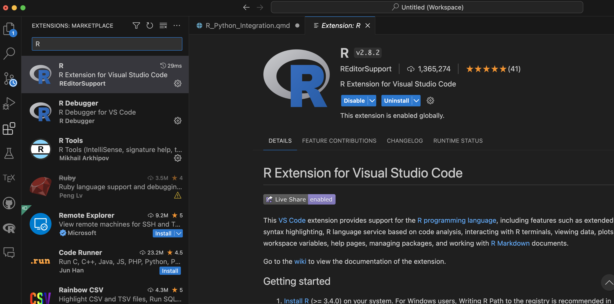
2.1.2 Install radian
- In your
8222python environment, install pacakgeradianusing the following command:
mamba activate 8222env3
mamba install -c conda-forge radianOr, you can use pip to install radian:
pip install radianTo Run
radian:radianTo exit
radian:q()
2.1.3 Launch radian and install languageserver
In the radian console, run the following command to install languageserver, say yes, 1, and yes to the following questions.
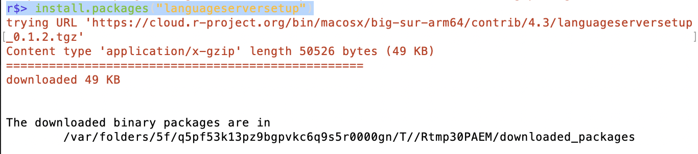 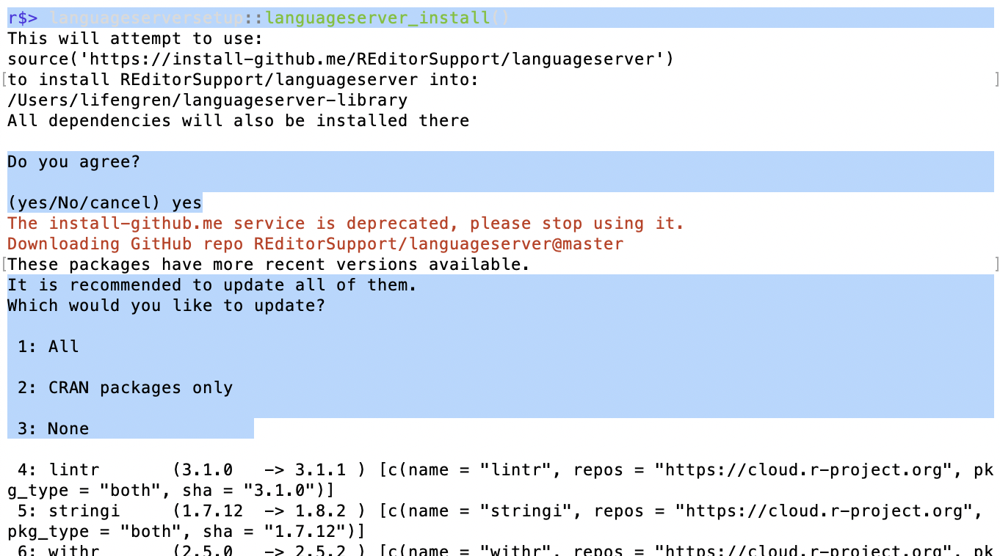 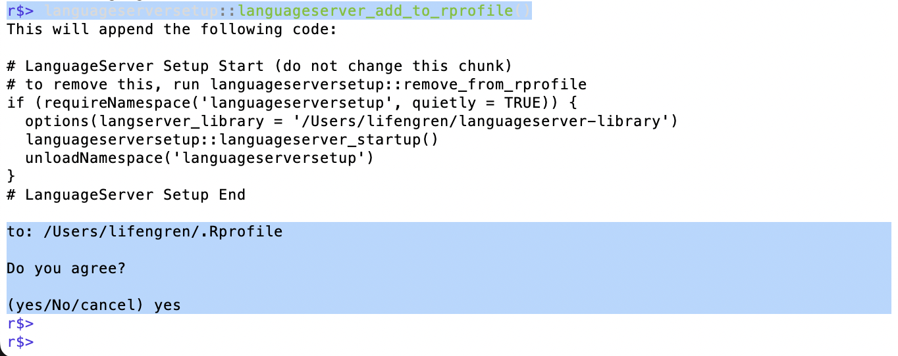
2.2 Get Familiar with R in VS Code
HelpPages 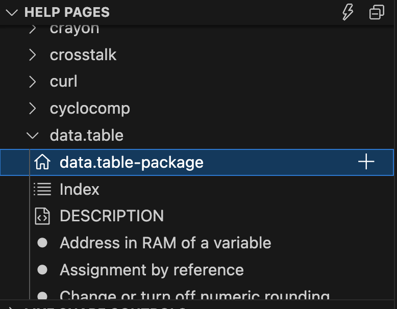 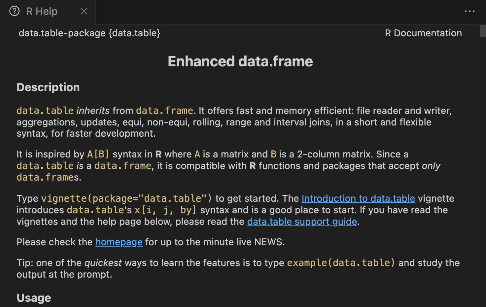- New R terminal
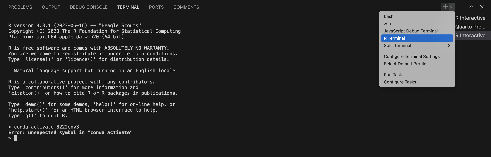
2.3 Switch Gear to VS Code
- Run selected R code in
VS Code- Windows:
Ctrl + Enterto run selected code - Mac:
Command + Enterto run selected code
- Windows:
- Run all R code in
VS Code:- Windows:
Ctrl + Shift + Sto run all code - Mac:
Command + Shift + Sto run all code
- Windows:
I assume you all have the background of R, and I assume the first half of APEC 8222 taught you some text analysis in R, so I will start using R to do some NLP application, and gradually switch to Python to do the same thing.
For more information on how R and Python packages are equivalent, please refer to this website:
3 Introduction to Natural Language Processing (NLP)
NLP is one of the major branches of Artificial Intelligence (AI). The following table shows each branch with a brief description and examples of applications:
| Branch of AI | Description | Examples of Applications |
|---|---|---|
| Machine Learning (ML) | Algorithms that enable computers to learn from and make predictions or decisions based on data. | - Recommendation systems - Self-driving cars - Predictive analytics |
| Natural Language Processing (NLP) | Focuses on the interaction between computers and human language, enabling understanding, interpretation, and generation of human language. | - Speech recognition - Language translation - Sentiment analysis |
| Computer Vision | Deals with how computers can gain high-level understanding from digital images or videos. | - Facial recognition systems - Medical image analysis - Autonomous vehicle navigation |
| Robotics | Involves designing and building robots that perform tasks, often using AI for perception and decision-making. | - Industrial robots for manufacturing - Surgical robots in healthcare - Exploration robots in space missions |
| Expert Systems | AI systems that simulate the decision-making ability of a human expert in specific domains. | - Medical diagnosis systems - Financial investment advising - Weather prediction models |
| Neural Networks and Deep Learning | A subset of ML based on artificial neural networks, particularly useful for handling large amounts of unstructured data. | - Voice recognition and assistants - Advanced game-playing AI (like chess and Go) - Enhanced medical diagnoses |
This table provides a concise overview of the major branches of AI, their core functionalities, and examples of where they are applied in various industries and domains. Note that there will be overlap between these branches, and some applications may use multiple branches of AI.
The famous transformer model, is based on a paper called Attention is All You Need, which was published in 2017 by Google. The transformer model is a type of neural network architecture that is based on the concept of attention. The transformer model is the foundation of many of the most advanced NLP models today, including BERT, GPT-3, and T5.
It was designed by solving a translation problem, but it can be used for many other NLP tasks, including text classification, question answering, and summarization.
We will talk more about it in the next lecture.
3.1 Foundamental Concepts in NLP
Here’s a table that defines each NLP term, along with an example for each:
| Term | Definition | Example |
|---|---|---|
| Type | A distinct element of vocabulary in a text, representing a unique word. | In “cat, dog, dog”, “cat” and “dog” are two types. |
| Token | An instance of a sequence of characters in a text, often corresponding to a word or symbol. | In “I love AI”, “I”, “love”, and “AI” are tokens. |
| Term | A word or phrase used in a text or a collection of texts (corpus). | “Artificial intelligence” is a term in computer science texts. |
| Document | A single text or record in a dataset, like an article, an email, or a webpage. | An individual Wikipedia article is a document. |
| Corpus | A collection of documents, often used as a dataset in NLP. | A collection of all articles from a news website forms a corpus. |
| Bag of Words (BOW) | A model treating text as a collection of words without considering syntax or word order but maintaining frequency. | In “cat and dog”, BOW represents two words: “cat” (1), “dog” (1). |
| Term Frequency (TF) | The frequency of a term in a document. | In a document with 100 words, where the word “AI” appears 5 times, TF for “AI” is 5/100. |
| Inverse Document Frequency (IDF) | A measure of how much information a term provides by considering how common or rare it is across all documents. | “AI” appearing in 1 out of 1000 documents has higher IDF than if it appears in 100 out of 1000. |
| TF-IDF | A statistical measure used to evaluate the importance of a word to a document in a corpus; combines TF and IDF. | High TF-IDF for “neural network” in a document indicates its importance in that document within the given corpus. |
| Stop Words | Commonly used words in a language that are filtered out before processing text. | Words like “is”, “and”, “the” are often considered stop words. |
| Stemming | The process of reducing words to their base or root form, often crudely by chopping off word endings. | “Running”, “runner” stem to “run”. |
| Lemmatization | Similar to stemming but more sophisticated, reducing words to their base or dictionary form. | “Better” is lemmatized to “good”. |
| Part of Speech (POS) Tagging | The process of marking up a word in a text as corresponding to a particular part of speech. | In “The quick brown fox”, “quick” is tagged as an adjective. |
| Named Entity Recognition (NER) | The process of identifying and classifying key information (entities) in text into predefined categories. | In “Apple Inc. was founded by Steve Jobs”, “Apple Inc.” is recognized as an organization. |
| Word Embedding | A technique in NLP where words or phrases are encoded as real-valued vectors in a predefined vector space. | Each word in a corpus is represented as a vector in a multi-dimensional space. |
3.2 Very Very Basic NLP Application in R and Python
NLP has many applications, including but not limited to: - Document classification - Sentiment analysis - Author identification - Question answering - Topic modeling
3.2.1 Some Rules and Math
3.2.1.1 Zipf’s Law
\[ \text { word frequency } \propto \frac{1}{\text { word rank }} \text {. } \] It is usually found that the most common word occurs approximately twice as often as the next common one, three imes as often as the third most common, and so on.
3.2.1.2 TF-IDF
Term frequency, \(\operatorname{tf}(t, d)\), is the relative frequency of term \(t\) within document \(d\), \[ \operatorname{tf}(t, d)=\frac{f_{t, d}}{\sum_{t^{\prime} \in d} f_{t^{\prime}, d}}, \] where \(f_{t, d}\) is the raw count of a term in a document, i.e., the number of times that term \(t\) occurs in document \(d\). Note the denominator is simply the total number of terms in document \(d\) (counting each occurrence of the same term separately).
Inverse Document Frequency \[ \operatorname{idf}(t, D)=\log \frac{N}{|\{d \in D: t \in d\}|} = \log _{10}(\operatorname{count}(t, d)+1) \] with
- \(N\) : total number of documents in the corpus \(N=|D|\)
- \(|\{d \in D: t \in d\}|\) : number of documents where the term \(t\) appears (i.e., \(\operatorname{tf}(t, d) \neq 0\) ).
\[ \operatorname{tfidf}(t, d, D)=\operatorname{tf}(t, d) \cdot \operatorname{idf}(t, D) = \log _{10} \frac{N}{\mathrm{df}_t} \]
Example: \[ \begin{array}{lll} \hline \text { Word } & \text { df } & \text { idf } \\ \hline \text { Romeo } & 1 & 1.57 \\ \text { salad } & 2 & 1.27 \\ \text { Falstaff } & 4 & 0.967 \\ \text { forest } & 12 & 0.489 \\ \text { battle } & 21 & 0.246 \\ \text { wit } & 34 & 0.037 \\ \text { fool } & 36 & 0.012 \\ \text { good } & 37 & 0 \\ \text { sweet } & 37 & 0 \\ \hline \end{array} \]
Corpus of Shakespeare plays, ranging from extremely informative words that occur in only one play like Romeo, to those that occur in a few like salad or Falstaff, to those that are very common like fool or so common as to be completely non-discriminative since they occur in all 37 plays like good or sweet. (Source: https://web.stanford.edu/~jurafsky/slp3/14.pdf)
3.2.1.3 Cosine Similarity
\[ \operatorname{score}(q, d)=\cos (\mathbf{q}, \mathbf{d})=\frac{\mathbf{q}}{|\mathbf{q}|} \cdot \frac{\mathbf{d}}{|\mathbf{d}|} \]
This is equivlaent to the following: \[ \operatorname{score}(q, d)=\sum_{t \in \mathbf{q}} \frac{\operatorname{tf}-\operatorname{idf}(t, q)}{\sqrt{\sum_{q_i \in q} \mathrm{tf}-\mathrm{idf}^2\left(q_i, q\right)}} \cdot \frac{\operatorname{tf}-\operatorname{idf}(t, d)}{\sqrt{\sum_{d_i \in d} \mathrm{tf}-\mathrm{idf}^2\left(d_i, d\right)}} \]
\[ \operatorname{score}(q, d)=\sum_{t \in q} \frac{\mathrm{tf}-\operatorname{idf}(t, d)}{|d|} \]
So, for the following Query and provided document, we can calculate if the document is relevant to the query:
| Query | Documents | Content |
|---|---|---|
| Sweet love | Doc 1 | Sweet sweet nurse! Love? |
| Doc 2 | Sweet sorrow | |
| Doc 3 | How sweet is love? | |
| Doc 4 | Nurse! |
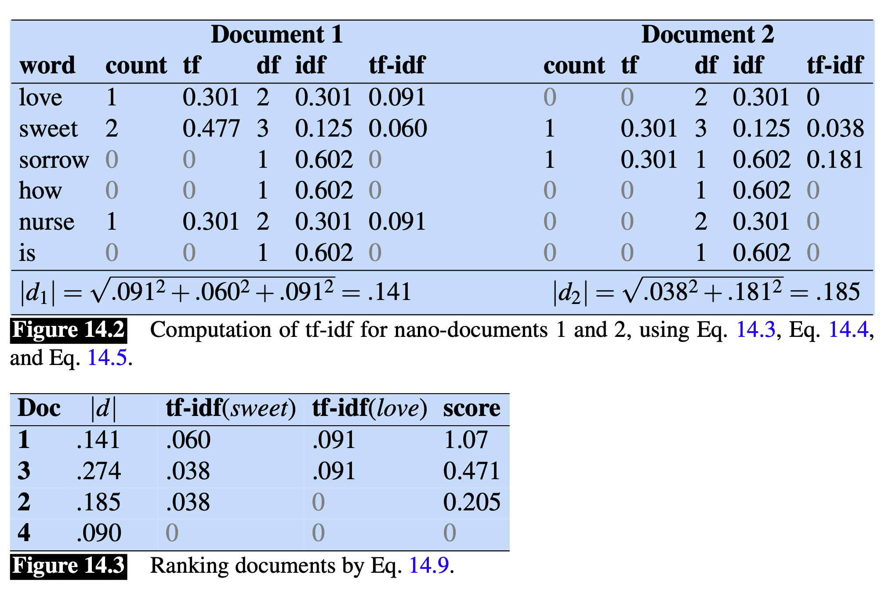
3.2.2 Application: Sentiment Analysis
Nowadays, many economics papers uses the text analysis to do sentiment analysis, which requires VERY BIG DATA. For example, the following paper uses the text analysis to do sentiment analysis:
Shapiro, A. H., Sudhof, M., & Wilson, D. J. (2022). Measuring news sentiment. Journal of econometrics, 228(2), 221-243.
Benhima, K., & Cordonier, R. (2022). News, sentiment and capital flows. Journal of International Economics, 137, 103621.
Chen, C. Y. H., Härdle, W. K., & Klochkov, Y. (2022). Sonic: Social network analysis with influencers and communities. Journal of Econometrics, 228(2), 177-220
Ash, E., & Hansen, S. (2023). Text algorithms in economics. Annual Review of Economics, 15, 659-688.
So, we will use Sentiment Analysis as the realzied application of NLP in this lecture.
Get the Sentiment Score (Basic Method)
\[ \text { sentiment }_i=\frac{\# \text { Positive terms }_i-\# \text { Negative terms }_i}{\# \text { Positive terms }_i+\# \text { Negative terms }_i} \]
Let us start with a simple example of sentiment analysis in R.
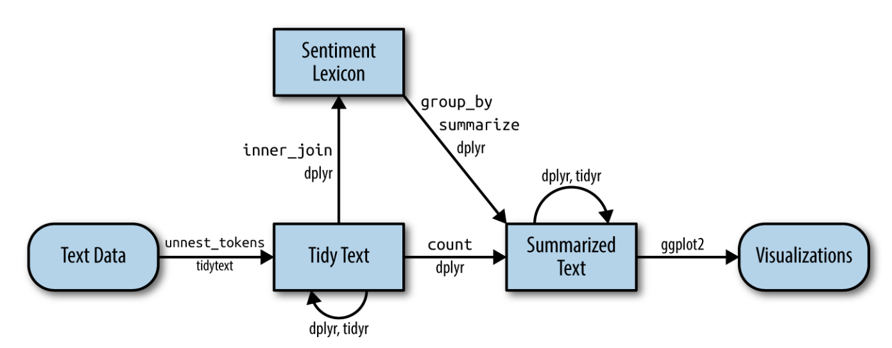
Note: We are going to only applied the Dictionary/Lexical Methods in this lecture. There are other advanced methods using other machine learning methods, and we are not going to cover them in this lecture. Refer to the following repository for more works:
3.2.2.1 R Example: Jane Austen’s Books-Emma’s Sentiment Analysis
This is an exmaple from Introduction to tidytext by Julia Silge and David Robinson. The book is available online at https://www.tidytextmining.com/.
Loading and Preparing the Data:
# Load required libraries library(janeaustenr) library(textdata) library(tidytext) library(dplyr)Attaching package: 'dplyr'The following objects are masked from 'package:stats': filter, lagThe following objects are masked from 'package:base': intersect, setdiff, setequal, unionlibrary(stringr) library(tidyr) library(ggplot2) library(wordcloud)Loading required package: RColorBrewerlibrary(reshape2)Attaching package: 'reshape2'The following object is masked from 'package:tidyr': smithsoriginal_books <- austen_books() %>% group_by(book) %>% mutate(line = row_number(), chapter = cumsum(str_detect(text, regex("^chapter [\\divxlc]", ignore_case = TRUE)))) %>% ungroup()- This code loads Jane Austen’s books using the
austen_booksfunction. - It groups the data by each book and adds two new columns:
linefor line numbers andchapterfor chapter numbers. - The
chapternumber is determined using regex to identify chapter headings in the text.
- This code loads Jane Austen’s books using the
Tokenization:
tidy_books <- original_books %>% unnest_tokens(word, text)- This part tokenizes the text into words. Each word in the text is separated into its own row, creating a tidy data frame of one-token-per-row.
Cleaning the Data:
cleaned_books <- tidy_books %>% anti_join(get_stopwords())Joining with `by = join_by(word)`- This code removes common stop words from the data to focus on more meaningful words.
Word Count:
cleaned_books %>% count(word, sort = TRUE)# A tibble: 14,375 × 2 word n <chr> <int> 1 mr 3015 2 mrs 2446 3 must 2071 4 said 2041 5 much 1935 6 miss 1855 7 one 1831 8 well 1523 9 every 1456 10 think 1440 # ℹ 14,365 more rows- Counts and sorts the words in the cleaned data. This helps in identifying the most common words in the books.
Sentiment Analysis - Positive Words in ‘Emma’:
positive <- get_sentiments("bing") %>% filter(sentiment == "positive") tidy_books %>% filter(book == "Emma") %>% semi_join(positive) %>% count(word, sort = TRUE)Joining with `by = join_by(word)`# A tibble: 668 × 2 word n <chr> <int> 1 well 401 2 good 359 3 great 264 4 like 200 5 better 173 6 enough 129 7 happy 125 8 love 117 9 pleasure 115 10 right 92 # ℹ 658 more rows- Extracts positive words from the Bing lexicon.
- Counts the frequency of positive words in the book “Emma.”
Sentiment Analysis Across Books:
bing <- get_sentiments("bing") janeaustensentiment <- tidy_books %>% inner_join(bing) %>% count(book, index = line %/% 80, sentiment) %>% spread(sentiment, n, fill = 0) %>% mutate(sentiment = positive - negative)Joining with `by = join_by(word)`Warning in inner_join(., bing): Detected an unexpected many-to-many relationship between `x` and `y`. ℹ Row 435434 of `x` matches multiple rows in `y`. ℹ Row 5051 of `y` matches multiple rows in `x`. ℹ If a many-to-many relationship is expected, set `relationship = "many-to-many"` to silence this warning.- This section joins the tidy book data with the Bing sentiment lexicon.
- It calculates the sentiment scores for sections of text across different books.
Sentiment Visualization:
ggplot(janeaustensentiment, aes(index, sentiment, fill = book)) + geom_bar(stat = "identity", show.legend = FALSE) + facet_wrap(~book, ncol = 2, scales = "free_x")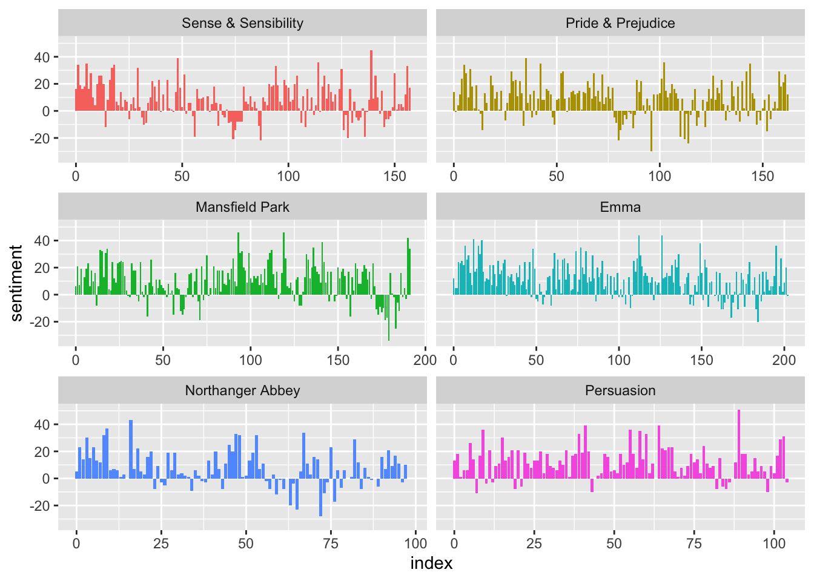
- Visualizes the sentiment data using a bar chart.
Word Sentiment Counts:
bing_word_counts <- tidy_books %>% inner_join(bing) %>% count(word, sentiment, sort = TRUE)Joining with `by = join_by(word)`Warning in inner_join(., bing): Detected an unexpected many-to-many relationship between `x` and `y`. ℹ Row 435434 of `x` matches multiple rows in `y`. ℹ Row 5051 of `y` matches multiple rows in `x`. ℹ If a many-to-many relationship is expected, set `relationship = "many-to-many"` to silence this warning.- Counts the occurrence of words associated with each sentiment.
Sentiment Contribution Visualization:
bing_word_counts %>% filter(n > 150) %>% mutate(n = ifelse(sentiment == "negative", -n, n)) %>% mutate(word = reorder(word, n)) %>% ggplot(aes(word, n, fill = sentiment)) + geom_col() + coord_flip() + labs(y = "Contribution to sentiment")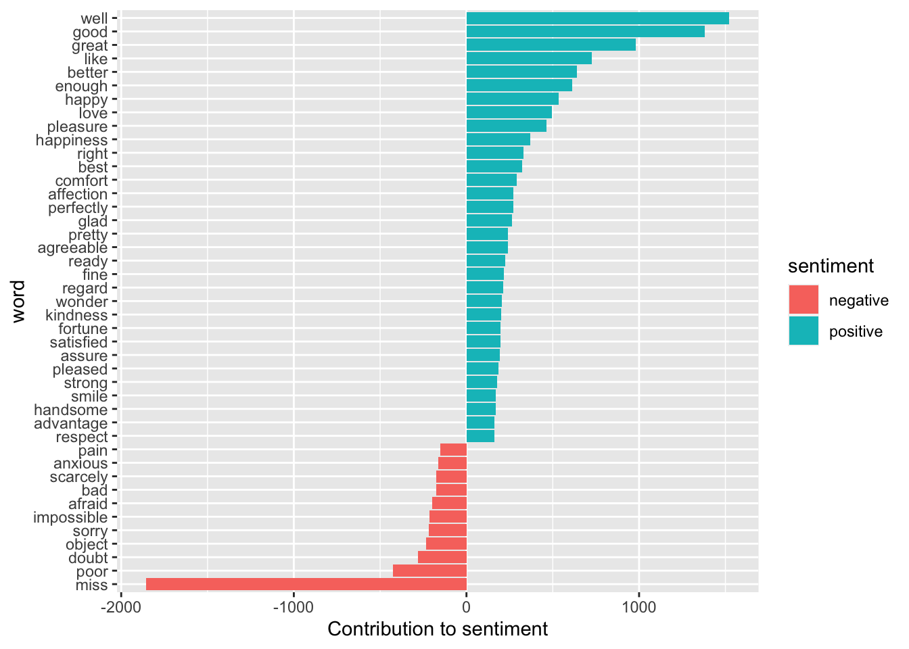
- Visualizes the contribution of each word to the overall sentiment.
Word Cloud Generation:
cleaned_books %>% count(word) %>% with(wordcloud(word, n, max.words = 100))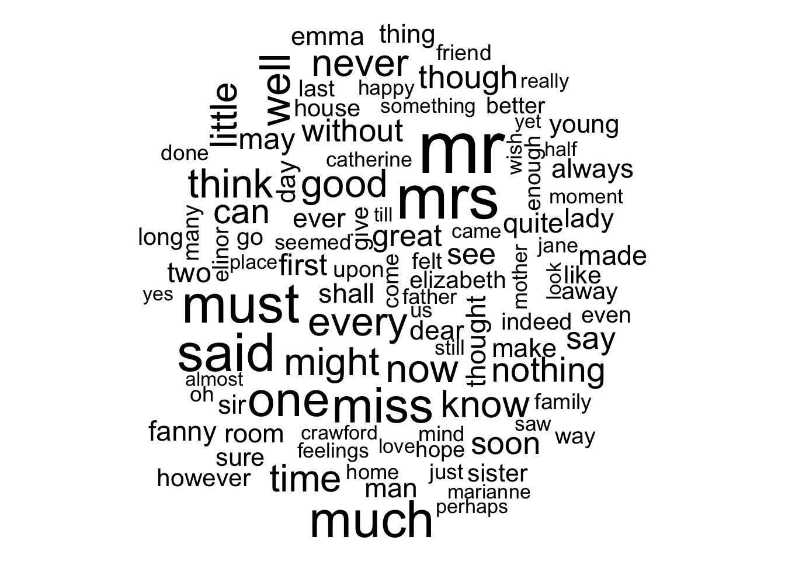
- Creates a word cloud from the most frequent words in the cleaned books data.
Comparison Cloud:
tidy_books %>% inner_join(bing) %>% count(word, sentiment, sort = TRUE) %>% acast(word ~ sentiment, value.var = "n", fill = 0) %>% comparison.cloud(colors = c("#F8766D", "#00BFC4"), max.words = 100)Joining with `by = join_by(word)`Warning in inner_join(., bing): Detected an unexpected many-to-many relationship between `x` and `y`. ℹ Row 435434 of `x` matches multiple rows in `y`. ℹ Row 5051 of `y` matches multiple rows in `x`. ℹ If a many-to-many relationship is expected, set `relationship = "many-to-many"` to silence this warning.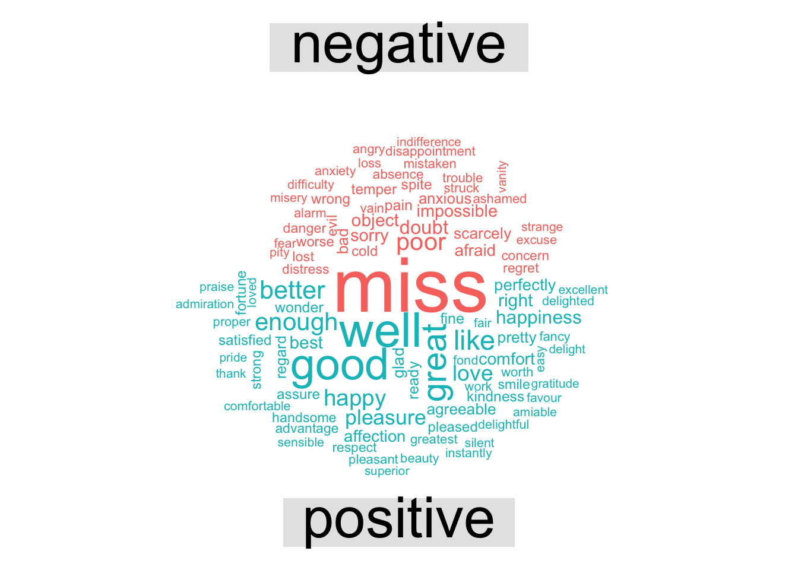
- Generates a comparison cloud to visually compare the frequency of words associated with different sentiments.
- Negates the count for negative sentiment words for visualization purposes.
- Reorders words based on their count.
- Creates a horizontal bar plot with
ggplot2showing the contribution of each word to the overall sentiment, distinguishing between positive and negative sentiments.
3.2.2.3 Inclass Exercise:
- Use ChatGPT to generate texts for you to test how VADER works:
- Demo, and Discussion
4 Summary Today and For Next Lecture
This lecture is designed to refresh your memory on R about text analysis, and using R in VS Code to apply NLP method like sentiment analysis.
For next lecture, we will talk about Large Language Models and how can we use it in Economic Research.
5 References
- Text Mining with R: A Tidy Approach” was written by Julia Silge and David Robinson